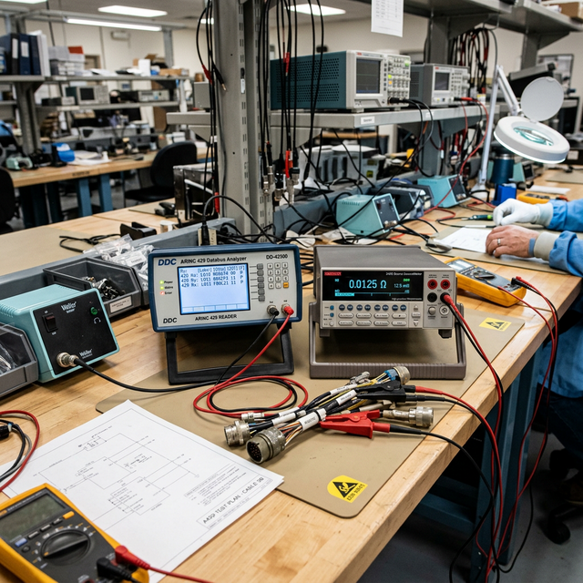

Oscilloscope & specialty instruments awareness
Module Objectives
- Describe the primary diagnostic advantage of an oscilloscope over a digital multimeter.
- Identify the specific fault conditions that require the use of a milliohmmeter or a megohmmeter.
- Explain the role of a databus analyzer in diagnosing digital communication failures.
Why Does This Matter?

An EFIS display loses its heading data intermittently. It drops out for two seconds, recovers, and works fine for an hour before doing it again. Your multimeter reads a rock-solid 28V at the display's power pin. Your continuity checks on the wiring pass perfectly. The fault is not in the power or the copper wire — it is in the digital data. The only way to see what is happening on an ARINC 429 databus is with a databus analyzer. Knowing exactly which specialty instrument to reach for is the hallmark of a master technician.
What You Need To Know
A standard Digital Multimeter (DMM) is a blunt instrument. It shows steady-state voltage and simple resistance. Advanced avionics require advanced insight.
Oscilloscope (Visualizing Time)
An oscilloscope (O-scope) displays voltage as a visual function of time on a calibrated screen. Unlike a DMM which averages a reading into a single number, an oscilloscope shows you:
- Waveform shape — Is it a clean sine wave, a square wave, or corrupted digital pulses?
- Amplitude — The absolute peak-to-peak transient voltage limits.
- Frequency — How rapidly the signal cycles (Hz).
- Interference — Visually seeing high-frequency alternator noise riding on top of a DC power line.
Use case: When you need to see exactly *how a signal behaves over time* or identify split-second electrical noise glitches that a DMM cannot catch.
Milliohmmeter (Micro-Resistance)
A standard multimeter cannot accurately measure resistance below 1 ohm because the resistance of the meter's own test leads skews the reading. A milliohmmeter uses a 4-wire technique to measure extremely low resistance values (milliohms) with extreme precision.
- Use case: Verifying lightning protection bonding straps. If the manual requires a bonding strap connection to measure less than 3 milliohms (0.003Ω) to the airframe, only a milliohmmeter can prove it.
Megohmmeter (Megger / Insulation Testing)
A megohmmeter is designed specifically to test the integrity of wire insulation. It applies a very high test voltage (typically 500V or 1000V DC) across the insulation to see if it "leaks" current.
- Use case: Testing heavy gauge starter cables, generator windings, or aging wire bundles for microscopic cracks, chafing, or moisture intrusion. A standard DMM's 3-volt battery cannot stress insulation enough to find a high-voltage leak. Readings are measured in Megohms (Millions of ohms).
Digital Databus Analyzer
Modern avionics (Garmin, Collins, Honeywell) talk to each other using high-speed digital protocols like ARINC 429, RS-232, or Ethernet. A databus analyzer connects non-intrusively to the data wires and:
- Captures the lightning-fast 1s and 0s in real time.
- Decodes the raw binary into human-readable engineering data (e.g., "Heading: 275 degrees").
- Flags corrupted data words, parity errors, or incorrect timing.
- Use case: Essential for diagnosing "red X" display failures when the power and wiring are perfect, but the transmitting computer is broadcasting garbage data.
System Visualization
graph TD
A[Fault: Intermittent Heading Failure] --> B{What tool to use?}
B -->|Check Power| C[DMM: 28V OK]
B -->|Check Wire Continuity| D[DMM: 0.2 ohms OK]
B -->|Check Ground Strip| E[Milliohmmeter: 2 milliohms OK]
B -->|Check Data Signal| F[Databus Analyzer]
F --> G[Analyzer shows Parity Errors on ARINC 429 line]
G --> H[Fault Isolated: Transmitting AHRS is failing internally]
style B fill:#1e40af,stroke:#1e3a8a,stroke-width:2px,color:#fff
style H fill:#166534,stroke:#14532d,stroke-width:2px,color:#fff
On The Job
Match the specific instrument to the question you are asking: - "What does this audio signal look like?" → Oscilloscope - "Is this static wick bonded tightly enough to the aluminum?" → Milliohmmeter - "Is the insulation on this old generator cable breaking down?" → Megohmmeter - "Why is the GPS not talking to the Autopilot?" → Databus analyzer Reaching for a DMM out of habit when you need an analyzer wastes hours.
Reference Terms
Milliohmmeter
A precision instrument for measuring very low resistance values (milliohms). Used to verify aircraft bonding straps, connector contact resistance, and ground return paths where a standard DMM lacks resolution.
Milliohmmeter primary use
Measuring very low resistance values: bonding straps, connector contact resistance, and ground return paths. Provides milliohm-level precision where standard DMMs cannot.
Oscilloscope
An oscilloscope displays voltage as a function of time on a calibrated screen, allowing observation of signal amplitude (peak voltage), frequency (cycles per second), waveform shape (sine, square, triangle, digital), and timing relationships between signals.
Digital Databus Analyzer
A digital databus (protocol) analyzer connects non-intrusively to a databus and captures, timestamps, and decodes bus traffic in real time — displaying individual data words with their labels, values, and error conditions, enabling verification of correct operation and diagnosis of communication faults.
Tool for Intermittent Bus Failures
A digital databus analyzer (protocol analyzer) is the best tool for capturing intermittent bus failures — it monitors continuously and time-stamps all bus activity, capturing the failure event when it occurs even if it is brief and transient.
Databus Analyzer — Primary Purpose
A databus analyzer's primary troubleshooting purpose is to capture bus traffic in real time, decode individual data words (revealing label, value, and error status), and identify which transmissions are incorrect, corrupted, or missing entirely.
Protocol Analyzer — Common Name
A databus analyzer (also called a protocol analyzer) is the standard tool in avionics maintenance for capturing and analyzing digital databus traffic — available for ARINC 429, MIL-STD-1553, RS-232/485, and other protocols.
Megohmmeter (Megger)
An instrument that applies high voltage (typically 500V–1000V DC) to test insulation resistance in wiring, motors, and generators. Measures in megohms (MΩ). Low megohm readings indicate insulation breakdown or moisture contamination.
Databus Analyzer
A protocol reader that captures, decodes, and translates digital bus traffic (like ARINC 429) to diagnose communication faults.
Assessment Check
Oscilloscopes show high-speed waveforms over time, milliohmmeters prove bonding integrity, megohmmeters stress-test wire insulation, and databus analyzers translate digital communication. --- ---